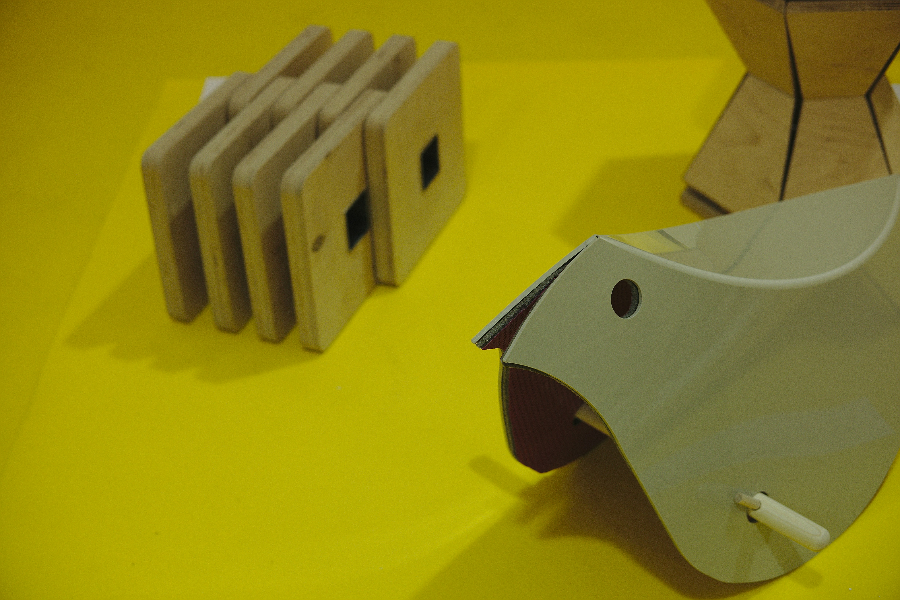

Visual Projects and Photography
This section demonstrates a fully responsive image gallery using CSS Grid. The layout is designed to dynamically adjust the number of columns based on the available browser width, ensuring optimal viewing on any device. It will automatically flow from a single column on mobile to three or four columns on a desktop screen.
City Lights (2025)
Desert Vista (2024)
Macro Bloom (2025)

Geometric Study (2024)
The `repeat(auto-fit, minmax(300px, 1fr))` CSS rule is what allows the images to flow dynamically. Try resizing your browser to see the columns automatically adjust!